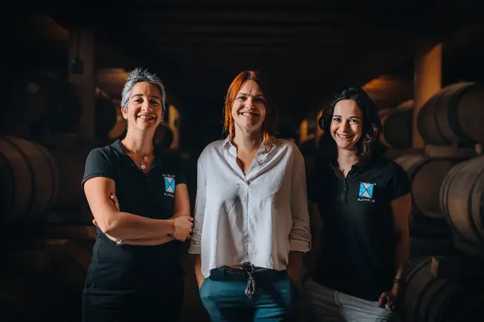

Languedoc · បារាំង
Blanville
ចម្ការ Blanville ត្រូវបានបង្កើតឡើងក្នុងឆ្នាំ ១៩៩៧ ដោយ Béatrice និង Bernard Nivollet នៅ Saint-Pargoire ដែលមានផ្ទៃដីប្រមាណហុកសិបហិកតា ក្នុងតំបន់ AOP Languedoc Grés de Montpellier និង AOP Languedoc Pézenas។ ដំបូងឡើយ ចម្ការផ្តោតលើស្រាតែមួយពូជពីដីតែមួយកន្លែង ដែលទុកចាស់យូរ។
ស្រារបស់ចម្ការនេះត្រូវបានស្គាល់នៅក្នុងប្រទេសជាង ២៥។ នៅឆ្នាំ ២០១៥ មានការផ្លាស់ប្តូរជំនាន់ នៅពេលកូនស្រីរបស់ស្ថាបនិក គឺ Charlotte, Margaux និង Marion Mathelin ចូលបន្តការងារ ហើយបង្កើនប្រភេទស្រាដែលស្រស់ថ្មី និងមានរសជាតិផ្លែឈើ។
ដោយប្តេជ្ញាចិត្តចំពោះចីរភាព Blanville ទទួលបានវិញ្ញាបនបត្រ High Environmental Value (HVE) ក្នុងឆ្នាំ ២០១៩ ចាប់ផ្តើមបម្លែងទៅជាកសិកម្មសរីរាង្គក្នុងឆ្នាំ ២០២០ ហើយបានបើក Domaine des 8 Lunes ក្នុងឆ្នាំ ២០២២ ដោយអនុវត្តវិធីសាស្ត្រជីវឌីណាមិក។
ស្វែងយល់បន្ថែម